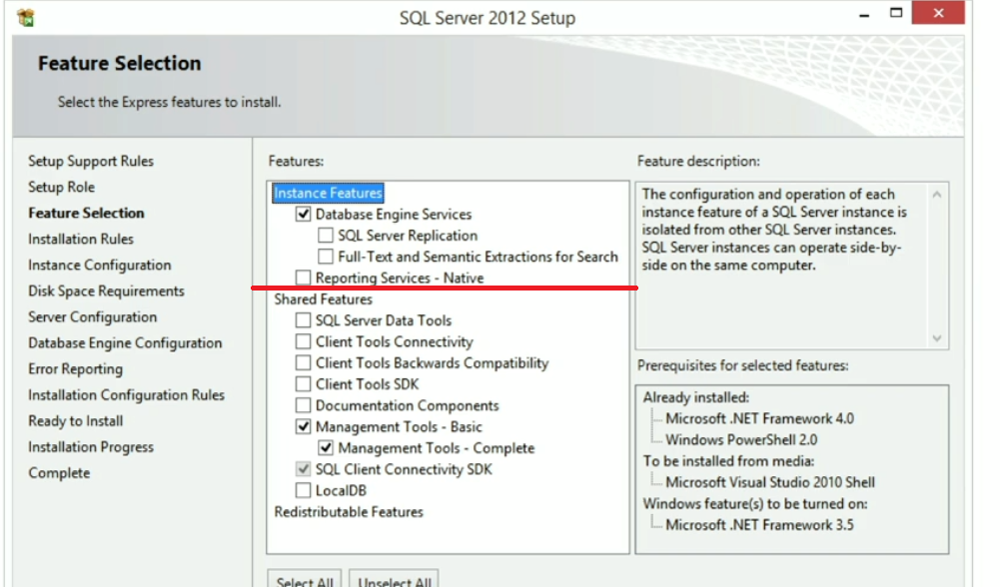
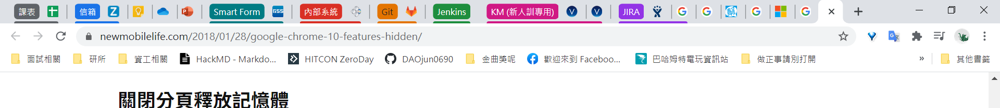

上班工作第一天，
由於抓不太準出門時間，算是壓線9點整抵達叡揚資訊，一進去已有女同事坐在那等待報到，之後人資ADA就來收我們的報到資料
報到地址10461台北市中山區德惠街9號5樓
1.身分證正本(正本影印後歸還)
2.最高學歷畢業證書影本
3.前一份工作離職證明
4.兩吋照片2張
5.一吋照片1張(製作識別證使用，若無一吋照片， 可多帶1張兩吋照片)
6.照片電子檔(公司內部電子報使用，請mail至HR信箱：hr@gss.com.tw)
7.自我介紹電子檔(公司內部電子報使用，約 200字即可，請mail至HR信箱：hr@gss.com.tw)
8.中國信託帳戶(每週一上午11:00可於公司開戶，請自備雙證件)
9.電腦/資訊相關證照、結業證書 正本(正本影印後歸還)
10.請參考附件(筆電補助辦法)，報到當天請攜帶筆電，謝謝。
11.請於報到前完成新人體檢(如附檔)，最遲需於報到1個月內完成。
之後請我們填保密協議、健保等等資料，之後ADA帶我參觀叡揚總部的ABCDE五個區塊，之後請Kelly 徐帶我到台銀大樓的辦公室。
抵達後，Kenny就帶我去會議室說明新人訓練事宜，由於中間因網路問題，所以Kenny與我又回到總部的MIS室查看，再把我的資訊以proxy輸進系統後，網路就開通了。
主要以翻轉教室的方式進行新人訓練，第一天主要是工作環境、開發環境準備，以及開發工具與開發規範。
今天主要是了解公司內部的系統，以及裝設Visual Studio and SQL Server，的部分。
中午時是Kenny主管請吃的中餐，我點了80元的鹽酥雞便當ˊˇˋ(沒想到摳打是200阿，我以為是100，真失策)
今天學習時有碰到了一些問題，在此稍作紀錄
- 安裝SQL Server時，發現一直只有管理工具可以安裝，沒有DB可以安裝 -> 因為瀏覽器要下載兩個安裝檔案時，被瀏覽器擋住多個下載，發現後即解決

如圖所示，當時上面兩部分是要分兩次動作進行安裝的 - SQL Server除了用windows認證外，還要可以用帳密輸入，但後者認證沒過 -> 帳號是sa
- jenkins的成功是亮綠燈? 以前在學校看都是藍燈呢
大概列這幾點。
P.S.1 這雙新靴有點新阿，今天走路一直刮我腳後跟呢
P.S.2 今天穿著跟面試一樣的襯衫+西裝褲去上班，Kenny大大說 新訓時期不用穿這麼正式，要我不要再這樣穿
P.S.3 如何才能再使用onetab的情況下，保留使用chrome的分組功能呢QQ
